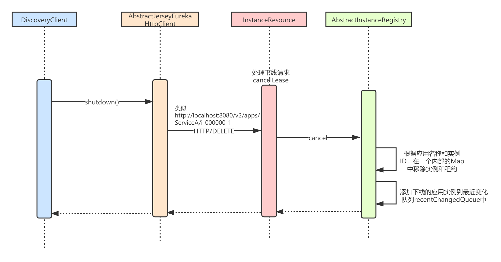
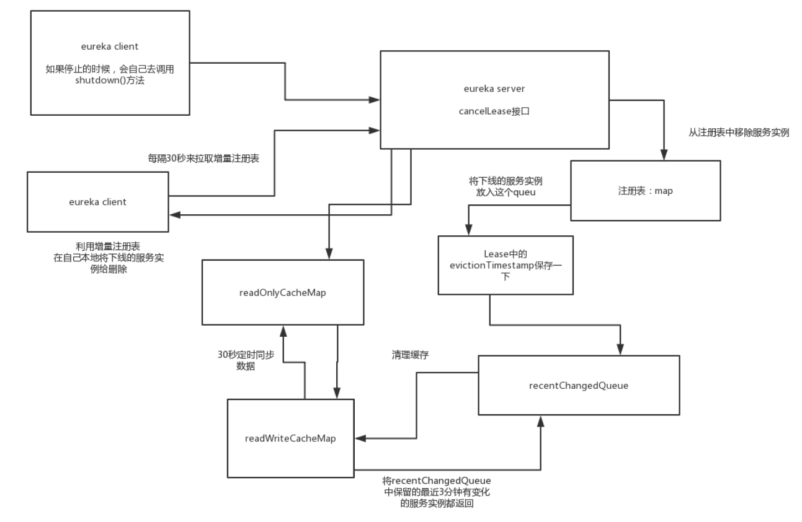

本章，我将讲解Eureka的应用实例下线（cancel）机制。应用实例关闭时，Eureka-Client 会向 Eureka-Server 发起下线（Cancel）应用实例的HTTP/DELETE请求。需要满足如下条件才可发起cancel请求：
eureka.registration.enabled = true ，即应用实例开启注册开关。默认为 false 。eureka.shouldUnregisterOnShutdown = true ，即应用实例开启关闭时下线开关。默认为 true 。
Eureka-Client的shutdown()方法用来发起服务下线请求，这个方法需要应用程序自己调用，比如可以放在Runtime.getRuntime().addShutdownHook()里面，在JVM退出前下线服务。
Eureka-Client发起下线（cancel）的整体流程如下：
DiscoveryClient.unregister()方法，内部调用了EurekaHttpClient.cancel()方法，向Eureka-Server发送HTTP/DELETE请求；我们首先来看下DiscoveryClient的shutdown()方法：
/**
* DiscoveryClient.java
*/
public synchronized void shutdown() {
if (isShutdown.compareAndSet(false, true)) {
logger.info("Shutting down DiscoveryClient ...");
// 1.注销监听器
if (statusChangeListener != null && applicationInfoManager != null) {
applicationInfoManager.unregisterStatusChangeListener(statusChangeListener.getId());
}
// 2.取消定时调度任务
cancelScheduledTasks();
// 3.设置当前实例状态(DOWN)，并发送下线请求
if (applicationInfoManager != null && clientConfig.shouldRegisterWithEureka()) {
applicationInfoManager.setInstanceStatus(InstanceStatus.DOWN);
unregister();
}
// 4.关闭底层通信组件
if (eurekaTransport != null) {
eurekaTransport.shutdown();
}
// 5.关闭监视器
heartbeatStalenessMonitor.shutdown();
registryStalenessMonitor.shutdown();
logger.info("Completed shut down of DiscoveryClient");
}
}
我们重点看第三步，也就是设置当前应用实例状态，并发送下线请求：
/**
* DiscoveryClient.java
*/
void unregister() {
if(eurekaTransport != null && eurekaTransport.registrationClient != null) {
try {
logger.info("Unregistering ...");
// 调用AbstractJerseyEurekaHttpClient#cancel(...) 方法，发送DELETE请求，实现应用实例的下线
EurekaHttpResponse<Void> httpResponse = eurekaTransport.registrationClient.cancel(instanceInfo.getAppName(), instanceInfo.getId());
logger.info(PREFIX + appPathIdentifier + " - deregister status: " + httpResponse.getStatusCode());
} catch (Exception e) {
logger.error(PREFIX + appPathIdentifier + " - de-registration failed" + e.getMessage(), e);
}
}
}
调用 AbstractJerseyEurekaHttpClient#cancel(...) 方法，发送HTTP/DELETE 请求到 Eureka-Server，实现应用实例信息的下线：
/**
* AbstractJerseyEurekaHttpClient.java
*/
@Override
public EurekaHttpResponse<Void> cancel(String appName, String id) {
// URL: http://localhost:8080/v2/apps/ServiceA/i-00000-1
String urlPath = "apps/" + appName + '/' + id;
ClientResponse response = null;
try {
Builder resourceBuilder = jerseyClient.resource(serviceUrl).path(urlPath).getRequestBuilder();
addExtraHeaders(resourceBuilder);
// 发送DELETE请求
response = resourceBuilder.delete(ClientResponse.class);
return anEurekaHttpResponse(response.getStatus()).headers(headersOf(response)).build();
} finally {
if (logger.isDebugEnabled()) {
logger.debug("Jersey HTTP DELETE {}/{}; statusCode={}", serviceUrl, urlPath, response == null ? "N/A" : response.getStatus());
}
if (response != null) {
response.close();
}
}
}
Eureka-Server接受下线（Cancel）的整体流程如下：
InstanceResource#cancelLease()，相当于Jersey的一个MVC框架；
经过上面的处理，那么下一次Eureka-Client来拉取增量注册表时，会发现readOnlyCacheMap里没有（定时任务每隔30秒与readWriteCacheMap进行比对并同步），从readWriteCacheMap获取也没有，则会从原始注册表里registry中获取增量注册表，而增量注册表最终就是从recentChangedQueue中获取的。
com.netflix.eureka.resources.InstanceResource，是处理单个应用实例的请求的 Resource ( Controller )，我们看下它的cancelLease方法：
/**
* InstanceResource.java
*/
@DELETE
public Response cancelLease(
@HeaderParam(PeerEurekaNode.HEADER_REPLICATION) String isReplication) {
// 调用AbstractInstanceRegistry.cancel进行下线
boolean isSuccess = registry.cancel(app.getName(), id, "true".equals(isReplication));
if (isSuccess) {
logger.debug("Found (Cancel): " + app.getName() + " - " + id);
return Response.ok().build();
} else {
logger.info("Not Found (Cancel): " + app.getName() + " - " + id);
return Response.status(Status.NOT_FOUND).build();
}
}
AbstractInstanceRegistry#cancel(...) 方法，下线应用实例信息：
/**
* AbstractInstanceRegistry.java
*/
private ConcurrentLinkedQueue<RecentlyChangedItem> recentlyChangedQueue = new ConcurrentLinkedQueue<RecentlyChangedItem>();
@Override
public boolean cancel(String appName, String id, boolean isReplication) {
return internalCancel(appName, id, isReplication);
}
protected boolean internalCancel(String appName, String id, boolean isReplication) {
try {
read.lock();
CANCEL.increment(isReplication);
// key为应用实例ID，value为Lease对象
Map<String, Lease<InstanceInfo>> gMap = registry.get(appName);
Lease<InstanceInfo> leaseToCancel = null;
// 1.从Map中移除应用实例
if (gMap != null) {
leaseToCancel = gMap.remove(id);
}
// 添加到最近取消注册的调试队列，无实际业务用途
synchronized (recentCanceledQueue) {
recentCanceledQueue.add(new Pair<Long, String>(System.currentTimeMillis(), appName + "(" + id + ")"));
}
InstanceStatus instanceStatus = overriddenInstanceStatusMap.remove(id);
if (instanceStatus != null) {
logger.debug("Removed instance id {} from the overridden map which has value {}", id, instanceStatus.name());
}
if (leaseToCancel == null) {
CANCEL_NOT_FOUND.increment(isReplication);
logger.warn("DS: Registry: cancel failed because Lease is not registered for: {}/{}", appName, id);
return false;
} else {
// 2.取消租约，即设置租约的下线时间戳
leaseToCancel.cancel();
InstanceInfo instanceInfo = leaseToCancel.getHolder();
String vip = null;
String svip = null;
if (instanceInfo != null) {
// 3.添加到【最近变化队列】
instanceInfo.setActionType(ActionType.DELETED);
recentlyChangedQueue.add(new RecentlyChangedItem(leaseToCancel));
instanceInfo.setLastUpdatedTimestamp();
vip = instanceInfo.getVIPAddress();
svip = instanceInfo.getSecureVipAddress();
}
// 4.清除ResponseCache的可读写缓存
invalidateCache(appName, vip, svip);
logger.info("Cancelled instance {}/{} (replication={})", appName, id, isReplication);
return true;
}
} finally {
read.unlock();
}
}
private void invalidateCache(String appName, @Nullable String vipAddress, @Nullable String secureVipAddress) {
// invalidate cache
responseCache.invalidate(appName, vipAddress, secureVipAddress);
}
上述代码中，除了从内部的gmap这个注册表移除应用实例外，其它最关键的几个步骤分别是：
其中添加到变化队列和清除可读写缓存，我在【增量拉取注册表】一章中已经详细讲解过了，这里就不再赘述了。这里重点看下取消租约。
/**
* Lease.java
*/
public void cancel() {
if (evictionTimestamp <= 0) {
evictionTimestamp = System.currentTimeMillis();
}
}
可以看到，取消租约，其实就是设置了租约对象的evictionTimestamp，用来标注该实例对应的租约已经取消。
本章我讲解了Eureka的服务下线（Cancel）机制，本质就是Eureka-Client发送一个HTTP/DELETE请求到Eureka-Server端。Eureka-Server端接受到请求后，在自己的注册表中删除应用实例和对应的租约，然后将该实例添加到最近变化队列中。
这样下次其它应用实例进行增量拉取注册表时，就可以从recentChangedQueue中感知到已下线的应用实例，然后就可以在自己本地缓存中删除已经下线的应用实例了。